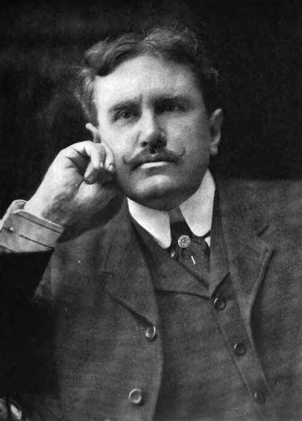

ഒ. ഹെൻറി (William Sydney Porter)
Written By: രാജു ജോസഫ്

അമേരിക്കൻ സാഹിത്യത്തിലെ ഏറ്റവും വിശ്രുതരായ എഴുത്തുകാരിൽ ഒരാളാണ് ഒ. ഹെൻറി എന്ന വില്യം സിഡ്നി പോർട്ടർ. ഏകദേശം അറുനൂറിനടുത്ത് ചെറുകഥകൾ അദ്ദേഹത്തിന്റേതായി ഉണ്ട്. ട്വിസ്റ്റുകൾ, അപ്രതീക്ഷിത പര്യവസാനങ്ങൾ (Surprise Endings), പ്രാദേശികത (Local Color), ദുഖവും സന്തോഷവും ഇടകലർന്നു വരുന്ന രചനാരീതി (Tearful Smile), സാധാരണ ജനങ്ങളുടെ ജീവിതം പ്രമേയമാക്കൽ തുടങ്ങിയവ അദ്ദേഹത്തിന്റെ കഥകളെ വേറിട്ടു നിര്ത്തുന്നു.
നോർത്ത് കരോലിനയിലെ ഗ്രീൻസ്ബറോ എന്ന സ്ഥലത്ത് 1862 ലാണ് പോർട്ടർ ജനിച്ചത്. ചെറിയ പ്രായത്തിൽ തന്നെ പലതരം ജോലികളിൽ ഏർപ്പെട്ടു. പത്തൊൻപത് വയസ്സായപ്പോൾ ഫാർമസിസ്റ്റ് ലൈസൻസ് സമ്പാദിച്ചു. 1882 ൽ ആരോഗ്യപരമായ കാരണങ്ങളാൽ ടെക്സസിലേക്കു താമസം മാറ്റി. അവിടെ ഫാർമസിസ്റ്റ്, ബാങ്കിലെ കണക്കുസൂക്ഷിപ്പുകാരൻ, പത്രപ്രവർത്തകൻ തുടങ്ങിയ ജോലികൾ ചെയ്തു. 1894 ൽ 'റോളിങ്ങ് സ്റ്റോൺ' എന്ന പേരിൽ ഹാസ്യ ആഴ്ചപ്പതിപ്പ് തുടങ്ങിയെങ്കിലും അത് നിന്നുപോയി. പിന്നീട് ഹ്യൂസ്റ്റൺ പോസ്റ്റിൽ കോളം എഴുത്തുകാരനായി ചേർന്നു. 1896 ൽ ബാങ്കിൽ ക്രമക്കേട് നടത്തി എന്ന കുറ്റം ആരോപിക്കപ്പെട്ടു. എന്നാൽ വിചാരണ തുടങ്ങുന്നതിനു മുൻപ് ഹോണ്ടുറാസിലേക്ക് പോയി.
ഹോണ്ടുറാസിൽ പലതരത്തിലുള്ള ആളുകളുമായി പോർട്ടർ സൗഹൃദം ഉണ്ടാക്കി. കൂട്ടത്തിൽ എടുത്തുപറയേണ്ടത് അൽ ജെന്നിങ്സ് എന്ന കുപ്രസിദ്ധ ട്രെയിൻ കൊള്ളക്കാരനുമായുള്ള സൗഹൃദമാണ്. പിന്നീട് ഇയാളെ മുഖ്യകഥാപാത്രമാക്കി ഒരു കഥയെഴുതുകയും ചെയ്തു പോർട്ടർ. ഹോണ്ടുറാസിൽ വെച്ചാണ് അദ്ദേഹം തന്റെ ആദ്യത്തെ കഥാസമാഹാരമായ 'കാബേജുകളും രാജാക്കന്മാരും' (Cabbages and Kings) എഴുതിയത്. ഇതിനിടയിൽ ഭാര്യയുക്കു ഗുരുതരമായ രോഗം വന്നതുകൊണ്ട് അദ്ദേഹം അമേരിക്കയിലേക്ക് മടങ്ങിപ്പോയി.
ഭാര്യയുടെ മരണത്തിനു ശേഷം 1898 ൽ ബാങ്കു തട്ടിപ്പു കേസിൽ 5 വർഷത്തെ ശിക്ഷവിധിച്ചു പോട്ടറെ ഒഹായോവിലെ ജയിലിലേക്ക് അയച്ചു. ജയിലിൽ ഫാർമസിസ്റ്റിന്റെ ജോലിചെയ്തതുകൊണ്ട് സെല്ലിൽ കഴിയേണ്ടി വന്നില്ല. മകളുടെ സംരക്ഷണത്തിനുള്ള പണം കണ്ടെത്താനായി ജയിലിൽ വെച്ച് ഒ. ഹെൻറി എന്ന പേരിൽ കഥകൾ എഴുതി പോർട്ടർ. നല്ല പെരുമാറ്റത്തിന്റെ പേരിൽ 1901-ൽ ശിക്ഷ ഇളവുനൽകി അദ്ദേഹത്തെ മോചിപ്പിച്ചു. അപ്പോഴേക്കും വില്യം സിഡ്നി പോർട്ടർ ഒ. ഹെൻറി എന്ന പേരിൽ അമേരിക്കയിലുടനീളം പ്രശസ്തനായിക്കഴിഞ്ഞിരുന്നു.
1902ൽ ഒ. ഹെൻറി ന്യൂയോർക്കിലേക്ക് താമസം മാറ്റി. തുടർന്ന് 1910 ൽ മരിക്കുന്നതു വരെ നിരവധി കഥകൾ എഴുതി ഒ. ഹെൻറി. ന്യൂയോർക്കിനെ വളരെ അധികം ഇഷ്ടപ്പെട്ടിരുന്ന ഒ. ഹെൻറി അതിനെ വിളിച്ചത് 'സബ്വേയിലെ ബാഗ്ദാദ്' (Bagdad on the Subway) എന്നാണ്. അമിത മദ്യപാനം മൂലമുണ്ടായ രോഗങ്ങൾ കൊണ്ട് 1910 ൽ അദ്ദേഹം മരിച്ചു.
ഒ. ഹെൻറിയുടെ മികച്ച കഥകൾ പലതും മലയാളികൾക്ക് പരിചിതമാണ്. 'ദ ഗിഫ്റ്റ് ഓഫ് ദ മജായ്' (ജ്യോതിഷികളുടെ സമ്മാനം), 'ദ ലാസ്റ്റ് ലീഫ്', 'റാൻസം ഓഫ് ദ റെഡ് ചീഫ്', 'ആഫ്റ്റർ ട്വന്റി ഇയേഴ്സ്', 'എ റിട്രീവ്ഡ് റീഫോർമേഷൻ' (വീണ്ടെടുത്ത നവീകരണം) തുടങ്ങിയ കഥകൾ ഇവയിൽ ചിലതാണ്.
ഒ. ഹെൻറിയെ ലോകമെങ്ങുമുള്ള വായനക്കാരുടെ പ്രിയപ്പെട്ട കഥാകാരൻ ആക്കിയത് അദ്ദേഹത്തിന്റെ സവിശേഷമായ രചനാരീതിയാണ്. ഭാഷാപ്രയോഗം കൊണ്ടു നർമ്മം സൃഷ്ടിക്കാനുള്ള അദ്ദേഹത്തിന്റെ കഴിവ് അതുല്യമായിരുന്നു. തുടക്കത്തിൽ സൂചിപ്പിച്ചതുപോലെ അപ്രതീക്ഷിത പരിസമാപ്തി തന്നെയാണ് ആ കഥകളുടെ സവിശേഷത. വായിച്ചുതുടങ്ങുമ്പോൾ കഥ എങ്ങനെ അവസാനിക്കും എന്ന് വായനക്കാരന് ഒരു സൂചനയും ലഭിക്കില്ല ഒ. ഹെൻറിയുടെ കഥകളിൽ. തനിക്കു പരിചയമുള്ള സാധാരണക്കാരായിരുന്നു അദ്ദേഹത്തിന്റെ കഥാപാത്രങ്ങൾ. അവരുടെ കഥപറയുമ്പോൾ മോഹഭംഗങ്ങളുടെയും ദുഖങ്ങളുടെയും ഇടയിൽ പ്രതീക്ഷയും സന്തോഷവും തിരുകിവെച്ചു അദ്ദേഹം (Tearful Smile).
ഓ. ഹെൻറിയുടെ രണ്ടു കഥകൾ അവയുടെ സവിശേഷതകൾ വ്യക്തമാക്കാൻ ഇവിടെ പരിചയപ്പെടുത്താം. അദ്ദേഹത്തിന്റെ ഏറ്റവും പ്രസിദ്ധമായ കഥ (ജ്യോതിഷിയുടെ സമ്മാനം - ഡെല്ലയുടേയും ജിമ്മിന്റെയും കഥ) എല്ലാവരും വായിച്ചിട്ടുണ്ട് എന്നറിയാം. അതുകൊണ്ടു ഞാനിവിടെ ചുരുക്കി പറയുന്നത് 'ദ കോപ് ആൻഡ് ദ ആന്തം' എന്ന കഥയും 'ദ ലാസ്റ്റ് ലീഫ്' എന്ന കഥയുമാണ്.
ദ കോപ് ആൻഡ് ദ ആന്തം

ദ കോപ് ആൻഡ് ദ ആന്തം എന്ന കഥയിൽ മുഖ്യകഥാപാത്രത്തിന്റെ പേര് സോപ്പി എന്നാണ്. കഥയിൽ അയാൾക്കു മാത്രമേ പേരുള്ളൂ. അയാൾ ന്യൂയോർക്കിലേക്ക് കുടിയേറിയ അനേകം ഭവനരഹിതരായ ആളുകളിൽ ഒരാളാണ്. ശൈത്യകാലത്ത് ഒരു താമസസ്ഥലം കിട്ടാനുള്ള മാർഗ്ഗം ജയിലിൽ പോകുകയാണ് എന്നയാൾ കരുതുന്നു. അതിനു വേണ്ടി അയാൾ ഒരു ആഡംബര ഹോട്ടലിൽ നിന്നു ഭക്ഷണം കഴിച്ചിട്ട് പണം കൊടുക്കാതിരിക്കാൻ തീരുമാനിക്കുന്നു. എന്നാൽ അയാളുടെ കീറിപ്പറിഞ്ഞ വസ്ത്രങ്ങൾ കാരണം ഹോട്ടലിൽ പ്രവേശിക്കാൻ അയാൾക്കു കഴിയുന്നില്ല. അടുത്തതായി ഒരു കടയുടെ ജനാലച്ചില്ലുകൾ തകർക്കുന്നു. എന്നാൽ പോലീസുകാരൻ സോപ്പിക്കു പകരം കണ്ടുനിന്ന ഒരാളെ പ്രതിയാക്കിയതുകൊണ്ട് ആ ശ്രമവും പരാജയപ്പെടുന്നു. തുടർന്ന് ഒരു ചെറിയ ഭക്ഷണശാലയിൽ തട്ടിപ്പു നടത്തുന്ന അയാളെ പോലീസിലേല്പിക്കാതെ ജോലിക്കാർ തന്നെ കൈകാര്യം ചെയ്യുന്നു. അടുത്തതായി അയാൾ ഒരു യുവതിക്കുനേരെ ലൈംഗികാതിക്രമത്തിനു തുനിയുന്നു. എന്നാൽ പരാതിയപ്പെടുന്നതിനു പകരം അവൾ അയാളോട് സഹകരിക്കാനാണ് ശ്രമിക്കുന്നത്. തുടർന്നു പൊതുസ്ഥലത്തു മദ്യപിച്ചു ശല്യമുണ്ടാക്കിയ അയാളെ ഒരു ഫുട്ബോൾ വിജയം ആഘോഷിക്കുന്ന വിദ്യാർത്ഥി എന്ന പരിഗണന നൽകി പോലീസുകാരൻ ഒഴിവാക്കുന്നു. ഒരു അവസാനശ്രമമായി അയാൾ ഒരു കുട മോഷ്ടിക്കാൻ ശ്രമിക്കുന്നു. ഉടമസ്ഥൻ പരാതിപ്പെടാൻ നിൽക്കാതെ അതയാൾക്കു കൊടുക്കുന്നു.
ജയിലിൽ പോകാൻ നടത്തിയ ശ്രമങ്ങളെല്ലാം പരാജയപ്പെട്ടു നിരാശനായ സോപ്പി ഒരു പള്ളിയുടെ സമീപം അലഞ്ഞുനടക്കുന്നു. പള്ളിയിൽ നിന്നു കേട്ട സ്തോത്രഗീതം (Anthem) അയാളിൽ ഒരു വലിയ പരിവർത്തനം ഉണ്ടാക്കുന്നു. ജോലിചെയ്യണം എന്നും ഒരു താമസസ്ഥലം കണ്ടെത്തണം എന്നും അയാൾ തീരുമാനിക്കുന്നു. ആ സമയത്ത് അവിടെയെത്തിയ ഒരു പൊലിസുകാരൻ സംശയകരമായ സാഹചര്യത്തിൽ കണ്ടു എന്ന കുറ്റം ചുമത്തി അയാളെ അറസ്റ്റ് ചെയ്യന്നു. തുടർന്ന് കോടതി അയാൾക്ക് മൂന്നുമാസത്തെ ജയിൽശിക്ഷ വിധിക്കുന്നു.
അവസാനത്തെ ഇല

'അവസാനത്തെ ഇല' എന്ന കഥയുടെ പശ്ചാത്തലം ന്യൂയോർക്കിലെ ഗ്രീൻവിച്ച് ഗ്രാമമാണ്. പണക്കാരല്ലാത്ത കലാകാരന്മാരാണ് അവിടുത്തെ താമസക്കാർ. സ്യുവും ജോൺസിയും ഒരു മുറിയിൽ കഴിയുന്ന യുവതികളായ കലാകാരികളാണ്. ബെർമാൻ അവരുടെ അയൽക്കാരനായ ഒരു മുതിർന്ന ചിത്രകാരനാണ്. എന്നെങ്കിലും തനിക്കൊരു മാസ്റ്റർപീസ് വരയ്ക്കാൻ കഴിയും എന്നാണ് അയാളുടെ പ്രതീക്ഷ. ഗ്രാമത്തിൽ ന്യുമോണിയ പടർന്നു പിടിക്കുന്നു. ജോൺസിക്കും രോഗം പിടിപെടുന്നു. അവളുടെ രോഗം ഓരോദിവസവും കൂടിവരികയാണ്.
മുറിയിലെ ജന്നലിലൂടെ അവൾക്കു എതിരെയുള്ള ഭിത്തിയിൽ വളർന്നു കയറിയ ഒരു വള്ളി കാണാം. അതിലെ ഇലകൾ ഓരോന്നായി കൊഴിഞ്ഞുപോകുന്നത് നോക്കി അവൾ മറ്റെല്ലാം മറന്നു കിടക്കുകയാണ്. അവൾക്കു ഉറപ്പുണ്ട് അതിലെ അവസാനത്തെ ഇല കൊഴിയുമ്പോൾ താൻ മരിക്കുമെന്ന്. എന്നാൽ ഒരു അത്ഭുതം കണക്കെ ആ ഇലമാത്രം കൊഴിയാതെ നിന്നു. അതു കണ്ട് ആത്മവിശ്വാസം വർദ്ധിച്ച ജോൺസി വേഗത്തിൽ സുഖം പ്രാപിക്കുന്നു. എന്നാൽ ബെർമാൻ ന്യുമോണിയ ബാധിച്ചു മരിച്ചുപോയിരുന്നു. ജോൺസിയുടെ ഒബ്സഷൻ അറിഞ്ഞ അയാൾ തണുപ്പ് കാര്യമാക്കാതെ രാത്രി മുഴുവൻ എടുത്ത് വള്ളിയിലെ അവസാനത്തെ ഇല റിയലിസ്റ്റിക് ആയി വരച്ചുവെക്കുകയായിരുന്നു, അയാളുടെ മാസ്റ്റർപീസ്.
ഫ്രഞ്ചുകാർക്ക് മോപ്പസാങ് ആരായിരുന്നോ അതാണ് അമേരിക്കക്കാർക്ക് ഒ. ഹെൻറി.